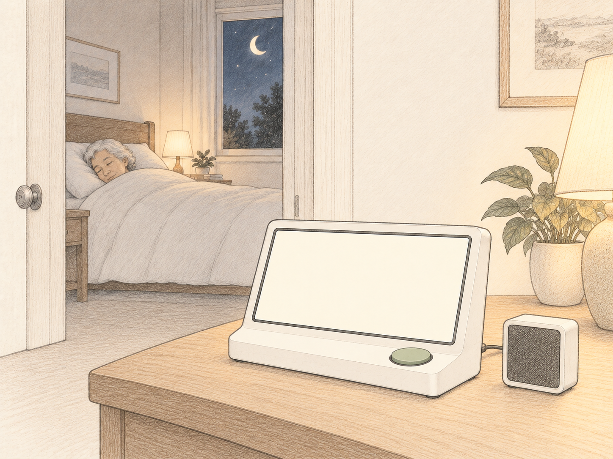
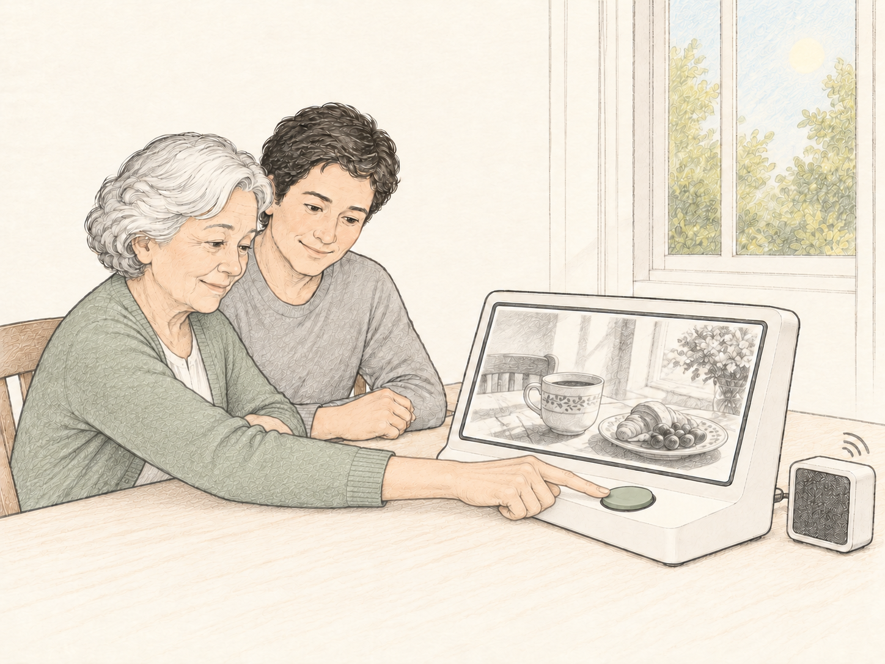

Bedtime handoffChoose photos and clips together, remove unwanted items and add notes. Then press “Prepare My Diary.”

02Processing
Overnight processingSelected daytime records become a draft while the user rests. No interaction needed.

03
Morning revealCaregiver review first; then the user presses Play. Approved narration accompanies the matching photo.Pause · Replay Chapter · Next Chapter